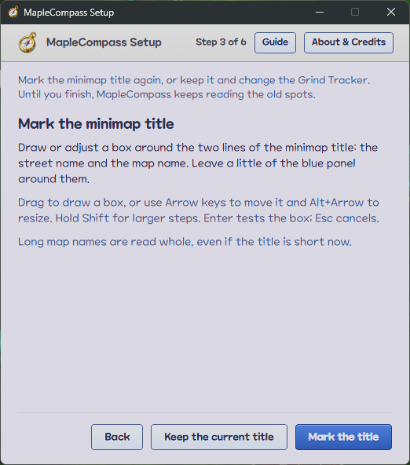

The map you're on, at a glance
MapleCompass is a free helper overlay for MapleStory Classic World. It reads the minimap title the way a screenshot does and shows you the map you're on: a picture of the whole map with every portal ringed, the Hidden Portals the game doesn't show, and its mobs with what they're worth.
Search a mob and it shows the way to a map to hunt it, portal by portal. Mark your EXP bar and it keeps your pace, your time to level and your best on every map.
MapleCompass isn't made, endorsed or supported by NEXON. Using any third-party tool with MapleStory is at your own risk.
On a phone? MapleCompass runs on a Windows PC, beside the game: open this page there to download it.
MapleCompass @VERSION@ · Windows 10 and 11, 64-bit · Other downloads · What's new
The files aren't code-signed, so Windows may say it "protected your PC": choose More info, then Run anyway. Play the game windowed or borderless, not fullscreen.

Get started
How it stays safe · Install · Setup · When it doesn't work · What it fetches and keeps
How it stays safe
MapleCompass is a third-party tool, not made or approved by Nexon. Nexon's terms forbid some third-party programs, and a penalty in Classic World applies to your whole account, MapleStory included. Using MapleCompass is at your own risk.
To keep that risk low, MapleCompass only looks at the screen:
- It captures the minimap title (and, if you choose, the EXP bar) the same way a screenshot does, and draws its own window.
- It never reads or changes the game's memory or files, and never injects anything into it.
- It never presses keys or clicks for you, and automates nothing.
Its hotkeys. They are ordinary hotkeys registered with Windows, not a keyboard hook, and they act only while the game or one of MapleCompass's windows is in front.
Check for yourself. You don't have to take this on trust: its source code is public on GitHub, for anyone to read.
Install
MapleCompass runs on Windows 10 and 11, 64-bit, beside MapleStory Classic World played windowed or borderless (not fullscreen), with the minimap open and both lines of its title showing.
If Windows warns you. The files aren't code-signed, so Windows SmartScreen may say it "protected your PC": choose More info, then Run anyway.
Updating. Quit the running MapleCompass first (its compass in the notification area: Quit MapleCompass). Your settings, hotkeys and Personal Bests carry over.
Setup
On first run, a setup window walks you through:
- The account warning above.
- Finding the game window, or picking it by hand.
- Setting up the game: windowed or borderless, with the minimap open and its title showing.
- Marking the minimap title: drag a box around its two lines. Or move the box with the Arrow keys and resize it with Alt+Arrow (hold Shift for ten-pixel steps). Enter tests the box; Esc goes back without changing the previous mark.
- A test read, which shows the map it recognised and the keys to use while you play.
- If you like, marking the EXP bar, for the Grind Tracker.
- A test read of the EXP bar, if you marked it. Finish starts the overlay.
Opening it again. Ctrl+Shift+S opens setup again, to mark the title anew or read the Overlay Guide, which lists your hotkeys and explains placement and the hunting figures. MapleCompass asks you to set up again when the game window changes size.
In the tray. While it runs, its gold compass sits in the notification area (the system tray, by the clock). Click it for Help & Setup or Quit MapleCompass, the one way to quit, whether or not the game is open.
Closing setup on first run quits. Only one MapleCompass runs at a time: starting it again shows the one that is running.

When it doesn't work
- Windows says it "protected your PC"
- The files aren't code-signed: choose More info, then Run anyway.
- Setup can't find the game window
- Start MapleStory first, or pick its window by hand: choose Select game window, then hold the pointer over the game while setup counts down.
- The test read says "No map recognised in the marked box"
- Open the minimap with both lines of its title showing, then mark the box again around both lines, with a little of the blue panel around them. Setup waits on this step until a map is recognised.
- The panel doesn't show
- It shows only while the game is open and not minimised, and the game or one of MapleCompass's windows is in front: click into the game. Screen capture can't see exclusive fullscreen, so play windowed or borderless.
- The panel can't tell which map you're on
- It says "Reading the minimap title…", or shows the last map it read marked Not sure. Keep the minimap open with both lines of its title showing; if it goes on, mark the title again with Ctrl+Shift+S.
- The panel says "The game window changed size"
- The title and the EXP bar have moved with it, so setup opens by itself: mark them again.
- The panel says "Map recognition unavailable"
- It couldn't load the map list from OSMS Data Explorer, which the first launch needs. Check your connection: it tries again every minute. If it says OSMS's data has changed format, MapleCompass needs an update.
- A hotkey does nothing
- The panel says when another app has its keys: close that app, or change the hotkey. Hotkeys act only while the game or one of MapleCompass's windows is in front.
- The Grind Tracker says "Can't read the EXP bar"
- Move whatever covers the bar. If nothing does, open setup with Ctrl+Shift+S, keep the current title, and choose Mark the EXP bar.
Something else? Report it on GitHub: what you did, what you expected, and what MapleCompass showed.
What it fetches and keeps
- Map and mob data
- From OSMS Data Explorer: five files, under 1 MB together, fetched when you start MapleCompass if its saved copy is a day old, and every 24 hours while it runs. It works offline after the first launch, which needs a connection. If OSMS can't be reached for over a week, the panel says it shows a saved copy, with its date.
- Map pictures and mob animations
- The shown map's picture and its mobs' animations, fetched from OSMS once and kept until they go 30 days unused.
- Item searches
- Item Lookup asks NiaMeowDB's search for the name of the item you hover, only when you press its hotkey: each name once a week at most, 2 seconds apart. These are MapleCompass's only requests to MeowDB; its links open MeowDB's pages in your browser.
- Nothing else
- There is no account, no analytics and no update check.
Where you are
The panel: what it shows about the map you're on, and how it sits over the game.
The panel · The Map and its Hidden Portals · Map Summary and Mobs · When maps share a title
The panel
Once it knows your map, the panel shows the map's name, then three sections: the Map, Navigation while you have a Hunting Target (a mob and a map you picked to go and hunt it on), and the Mobs.
Clicking it. You can click it at any time, and a click never takes the keyboard from the game: only the search view and Settings do. Click a section's heading to collapse it to its heading, and again to open it; a collapsed section stays collapsed from map to map and the next time you start MapleCompass.
Moving and sizing it. Drag it by its header to move it, or by a side or a bottom corner to make it wider or narrower; its height follows what it shows, and a long list scrolls instead. Dragged onto the minimap title, which MapleCompass reads, it moves just clear of it when you let go.
Showing and hiding. It shows on top of everything, but only while the game or one of MapleCompass's windows is in front. While another app is, or the game is minimised, it hides: opening a MeowDB page in your browser hides it until you go back to the game. It shows up in your screenshots and streams.
Placement
The panel starts on the right edge of the game window, its top a third of the way down, and grows downward as its content changes. Ctrl+Shift+P switches between four placements:
- Inside. The panel keeps the spot you dragged it to relative to the game window.
- Docked right or left. It follows the game window's outside edge, and goes inside when there is no room on screen.
- Detached. You can drag it anywhere, such as onto another monitor, and it stays there, with a taskbar entry of its own.

The Map and its Hidden Portals
The Map section shows a picture of the whole map, the Map Preview, on every map, towns included, with every portal ringed where it is:
- blue to another map;
- green within the map, with a dashed arrow to where it lands;
- grey to a map MapleCompass doesn't know.
Hidden Portals. Below the picture are the map's exits to other maps the game doesn't show, dashed on it. Each row says where it leads, tagged Hidden Street when it leads to one, or Quest when it only works during a quest.
Pointing at a portal. Rest the pointer on a ring to see where it leads, its street and its kind, and to light its row; rest it on a row to light its ring.
The next portal. While you have a Hunting Target, each portal its route takes next from your map wears a wide magenta ring as well.
On a town, the invisible exits are its building doors, which you can see, so they are ringed like visible portals and not listed. A teleport within the map is never listed, though an invisible one is dashed. While the picture loads the section says "Loading map…", and if it can't be loaded, "Couldn't load the map picture" above the rows; a map with no picture and no Hidden Portals has no Map section.

Map Summary and Mobs
The Mobs section starts with the map's Map Summary: the EXP and mobs per hour you can expect, solo and in a party of 6 or more, worked out as MeowDB works them out. Then every mob on the map, sorted by level. On a busy map the list runs long: collapse the section to its heading and it shows just the count.
Mob Cards. Rest the pointer on a mob's name to see its card: the mob as OSMS animates it, and the figures its row doesn't show, such as its element, touch damage, accuracy, avoid and defences. Click the name to open the mob's MeowDB page.
Hunting
Find where a mob spawns, pick a map, and follow the way there.
Search a mob
Ctrl+Shift+F, or the magnifier at the top of the panel, opens the search view. Type part of a mob's name and pick the mob, with the arrow keys and Enter or a click.
The mob's maps. The panel then lists every map the mob spawns on, ranked by Density Tier and then the nearest within a tier, each with its figures. Tick Taxis or Teleport Scrolls to count them as ways to travel. Event maps and the developers' room aren't listed.
The keyboard. The search view takes over the panel, and your typing, until it closes; then the game has the keyboard again. The back arrow or Esc leaves without changing anything.
Navigation to your Hunting Target
Pick a map the same way and it becomes your Hunting Target. The panel goes back to its normal view with a Navigation section between the Map and the Mobs: the mob as OSMS animates it, the map, its figures, and the route there from the map you're on, worked out again as you move.
The next portal. On the map's picture, the portal your route takes next wears a wide magenta ring.
Arriving. The route gives way to You're here, with how far you came, until you leave the map.
Changing or clearing it. Navigation's magnifier reopens the mob's map list to pick another map, and its × clears the Hunting Target. Otherwise it lasts until you close MapleCompass.

Grinding
Your EXP pace and time to level, and your best on every map.
The Grind Tracker
If you mark the EXP bar at setup, the Grind Tracker opens in a window of its own beside the panel. It shows:
- Time to Level, at your current pace.
- Your EXP per hour over the last 5 minutes and, once you've played longer, over the whole Session.
- How your pace compares with the solo EXP/h ceiling of the map you're on, after a minute there.
- Your deaths, and what they cost.
- At its foot, the EXP bar as it last read it, so you can see it's being read.
When the bar can't be read. If it can't for ten seconds, because something covers it or the mark no longer frames it, the window says so rather than counting the time as a break.
Resetting the Session. The circular arrow beside Time to Level resets the Session, which starts afresh at your next EXP gain; until then, Undo brings the old one back. It has no hotkey, so a stray key press while you fight can't clear it. If you switch character, the Session starts afresh by itself.
Moving it. It sits beside the panel with their tops level. Drag it by its bar anywhere, even outside the game window, and it keeps that spot; drag it back beside the panel and it follows the panel again.
Hiding and closing it. Like the panel, it hides while another app is in front or the game is minimised. Its × closes the window while the Session carries on; Ctrl+Shift+G or the panel's button shows it again.
Personal Bests
On a map with mobs, the Grind Tracker keeps your Personal Best: the best EXP per hour you've had over 5 minutes of play on that map, with any of your characters.
The Best row. Come back to a map and a Best row shows your best from earlier visits there, from the moment you arrive. Once you've played 5 minutes there, a yellow star marks your last 5 minutes while they beat it. The visit you're on joins your history when you leave the map.
Removing a best. If a best came from a misreading, or from a stretch you can't repeat, the × beside it removes it at once, with no undo, and your next-best visit takes over.
Every map's best. The star on the Grind Tracker's bar opens your Personal Bests in your browser: every map's best side by side, highest first, with each map's region and mob levels, how close your best came to its solo EXP/h ceiling, and when you set it. Click a column to sort by it, or a map to open it on MeowDB.
Bests are shared by all your characters, so the mob levels say what each was worth. A best on a map that has left the map list stays, marked "Not in the map list". The page shows your bests as they were when you opened it, so open it again to see newer ones.
Items
An item's MeowDB page, from its tooltip in the game.
Item Lookup
Hover an item in the game until its tooltip shows, then press Ctrl+Shift+I. MapleCompass reads the name in the tooltip nearest the pointer (the inventory's, or any window's drawn the same way) and opens the item's MeowDB page in your browser.
Which name. It reads the name on the line with the blue dot, so a crafted item's maker isn't taken for it. It opens a page only when MeowDB has an item of that name, allowing for letters the reading confuses, such as I and l.
The alert. An alert at the top centre of the game window says what came of it: the page it opened, or why nothing opened:
- no tooltip by the pointer;
- a name it couldn't read;
- a MapleCompass window covering the name;
- no MeowDB item of that name;
- MeowDB out of reach.
When several items share the name, the alert lists them with their categories for you to pick.
The alert goes after a few seconds (half a minute with a list), and clicks pass through it to the game unless it lists items. Item Lookup has no button, so it can't be used while its hotkey is turned off.

Keys
Every hotkey, and how to change one that clashes with the game.
Hotkeys
They work while the game or one of MapleCompass's windows is in front, and the game never sees them. In any other app, the same keys do what that app makes them do.
Changing a hotkey
If one clashes with a key you bind in the game, change it in Settings:
- Click the gear at the top of the panel (or Change hotkeys in setup's Overlay Guide).
- Click the hotkey's Change.
- Press the new combination, or Esc to cancel. While it waits for your keys, the hotkeys are released, so the combination you press reaches Settings rather than acting.
Which keys. A combination must hold Ctrl, Alt or Win. Ctrl+Shift with a key is safest: MapleStory attacks with Ctrl and jumps with Alt by default.
Keys already taken. If another MapleCompass hotkey has it, Swap trades the two. If Windows or another app already has one, the panel and the setup window say which, and Settings marks the row.
Turning one off. To stop a hotkey taking its keys from the game at all, turn it off: Turn off, or Backspace or Delete, while it waits. Its button at the top of the panel still works.
Saving and undoing. Every change works at once and is saved. Restore defaults puts every hotkey back, and on; Undo brings yours back until you change another or close Settings.
Like the search view, Settings has the keyboard while it's open, and closes when you click back into the game.